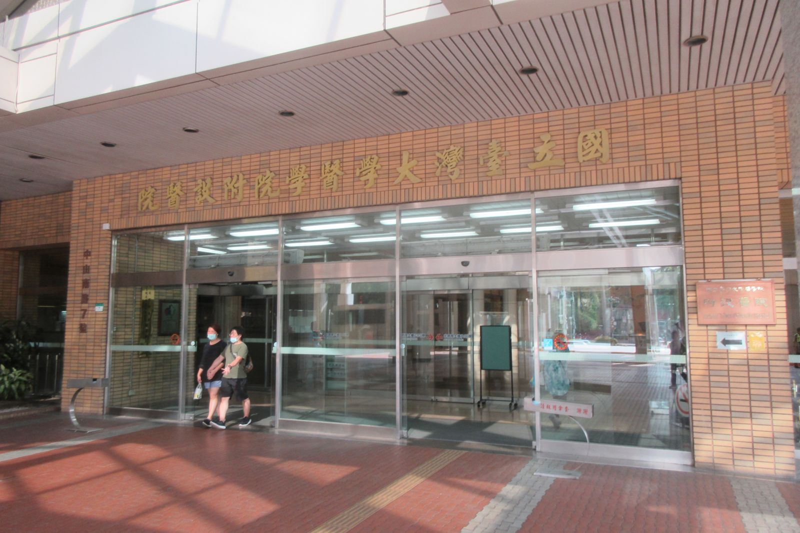

타이베이 여행 중 아플 때, 대만대병원 응급실 가도 될까?
응급실 입구와 서류 받는 순서만 알아두면 — 아픈 와중에도 보험 청구까지 한 번에 챙길 수 있어요.
게시 · 수정
"밤에 아이가 열이 나는데 대만대병원 응급실로 가도 될까?" 타이베이 여행 중 이런 상황을 겪는 여행자가 적지 않아요. 대만대병원(臺大醫院) 공식 안내를 바탕으로 2026년 10월 기준으로 정리해봤어요. 생명이 위급하면 대만 구급 번호 119로 먼저 연락하세요.
01 · 한눈에 비교하기
| 구분 | 응급실(急診) | 국제특약 외래(國際特約門診) |
|---|---|---|
| 위치 | 동쪽 건물(東址) 북측, 쉬저우로(徐州路) 쪽 | 동쪽 건물 1층(中山南路 7號) |
| 이런 분께 | 갑자기 아프거나 다쳤을 때 | 급하지 않고 영어 안내가 필요할 때 |
| 예약 | 바로 방문 | 전화·이메일 예약 |
| 운영 (2026년 10월 기준) | 응급 진료 | 평일 낮(주말·공휴일 휴무) |
진료비는 증상·검사에 따라 크게 달라서 이 글에는 넣지 않았어요. 요금은 방문 전 공식 안내를 확인하세요.

02 · 대만대병원 응급실 찾아가기
주소는 中山南路 7號, 입구는 쉬저우로 쪽 대만대병원은 동쪽·서쪽 건물이 따로 있어요. 응급실은 입원·응급을 맡는 동쪽 건물(東址) 북측에 있고 쉬저우로를 향해 있습니다.
MRT는 台大醫院역 단수이신이선 台大醫院역에서 내리면 가까워요. 택시를 탈 땐 '臺大醫院 急診'이라고 보여주면 편합니다.
들어가면 접수·안내 창구부터 응급실 로비 가운데에 접수·안내 창구가 있고, 오른쪽에 증상을 먼저 보는 분류 구역(急診篩檢站)이 있어요.
03 · 외국인 접수와 결제
여권 원본 지참 대만 건강보험이 없는 외국인은 자비로 진료받아요. 접수와 서류 신청 모두 여권 원본이 필요합니다.
결제는 현금·카드 병원 국제의료센터 안내 기준 현금과 Visa·Master·은련·JCB 카드를 받아요.
보험사가 병원과 계약이 없다면 먼저 자비로 내고, 영문 영수증과 진단서로 보험사에 청구하는 방식이에요.
04 · 대만 여행자보험 청구, 병원에서 바로 챙길 것
영문 진단서는 진료 중에 요청 응급 진료 진단서는 응급실 간호사실에 신청하면 응급 주치의가 발급하고, 응급 결제 창구에서 결제한 뒤 날인받아요. 영문은 1시간 정도 기다려야 해요.
나가기 전에 신청하기 퇴원할 때 신청하지 않으면 나중에 다시 접수해야 해서 번거로워요. 귀국 일정이 빠듯하면 꼭 그 자리에서 받으세요.
영수증 원본은 잘 보관 영수증 사본·진료비 명세서는 동쪽 건물 의료사무실 창구(주말엔 PAT 창구)에서 원본 영수증을 가지고 신청해요.
필요 서류는 내 보험사 기준 보험사마다 요구 서류가 달라요. 출국 전 가입한 보험사 안내를 휴대폰에 저장해 두세요.
항공 지연·결항까지 보장되는지는 대만 태풍 결항·여행자보험 글도 참고하세요. 병원에 가기 전 짐이 많다면 타이베이역 짐보관 글을 보고 맡겨 두면 움직이기 편해요. 몸이 회복되면 속이 편한 음식부터 찾게 되죠. 타이베이 대만 음식 맛집에서 가볍게 먹을 곳을 고르고, 동선은 타이베이 맛집 지도에서 한 번에 확인해 보세요.
지도에서 타이베이 맛집도 확인해보세요
몸이 회복되면 가볍게 들를 타이베이 맛집을 지도에 찜해두세요.